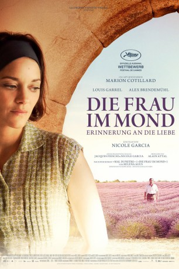
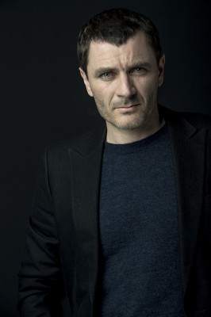

#6538 Die Frau im Mond
 
 IMDB-Wertung: 6.8 / 10
IMDB-Wertung: 6.8 / 10  Metascore: 0
Metascore: 0 
Eine Frau, die ihren festen Glauben an eine erfüllende und leidenschaftliche Liebe um keinen Preis aufgeben will, steht im Mittelpunkt des feinfühligen Dramas basierend auf dem gleichnamigen Roman „Die Frau im Mond“. Mit viel Gespür für kleinste Nuancen und mit sehr viel Gefühl hat Nicole Garcia den Weltbestseller vor imposanten Kulissen in Szene gesetzt. Die Grande Dame des französischen Kinos steht seit den 1960er Jahren als Schauspielerin vor der Kamera und arbeitet seit vielen Jahren auch als Regisseurin.
Jahr: 2016
Dauer: 120 Minuten
FSK:
Land: Frankreich Studio: StudioCanalTonspuren: DTS - ,
Untertitel: Deutsch,
Auflösung: 1080p (1920x800) Größe: 6748 MB
Genre: Drama, Liebe
Regisseur: Nicole Garcia
Drehbuch: Milena Agus
Soundtrack:
Darsteller:
 Marion Cotillard als Gabrielle Rabascal
Marion Cotillard als Gabrielle Rabascal Louis Garrel als Le lieutenant André Sauvage
Louis Garrel als Le lieutenant André Sauvage-  Alex Brendemühl als José Rabascal
- Francisco Alfonsin als Paco
- Rabea Egg als L'employée de la cure
- Brigitte Roüan als Adèle - la mère de Gabrielle
- Victoire Du Bois als Jeannine - la soeur de Gabrielle
- Aloïse Sauvage als Agostine
- Daniel Para als Martin - le père de Gabrielle et de Jeannine
- Jihwan Kim als Blaise - l'ordonnance
- Victor Quilichini als Marc Rabascal à 14 ans
- Ange Black-Bereyziat als Marc Rabascal à 7 ans
- Sören Rochefort als Georget
- Camilo Acosta Mendoza als Camilo
- Julio Bollullo Carasco als Julio
- Folco Jullien als Un garçon à la fête
- Maurice Chaspoul als Le maire
- Alexandre Dufour als Le facteur
- Pierre Alloggia als Le chauffeur de taxi
- Arthur Igual als L'instituteur
- Inès Grunenwald als La secrétaire de la cure
- Jérôme Chappatte als Le médecin de la cure
- Michael Evans als Le maître d'hôtel de la cure
- Polydoros Vogiatzis als Le photographe de la cure
- Elian Planes als Simon
- Frédéric Bélier-Garcia als Le professeur de piano
- Michelle Goddet als Un médecin
- Stéphane Roger als Le psychiatre
- Pierre Brichese als Un client de José
- Maxime Flourac als René
- Richard Bagno als Un lavandier
- Santiago Blanco als Un lavandier
- François Dos Santos als Un lavandier
- Bernardo Guillen als Un lavandier
- Emilio Martinez Alarcon als Un lavandier
- Mathilde Dromard als La femme de Simon
Datei: X:\2016(A-F)\Frau im Mond, Die (2016, FSK, 1920x800).mkv seit 05.07.2017
Festplatte: HD 2016(A-Z)
 Es gibt insgesamt 147 Filme in der Gruppe '2016(A-F)'
Es gibt insgesamt 147 Filme in der Gruppe '2016(A-F)'